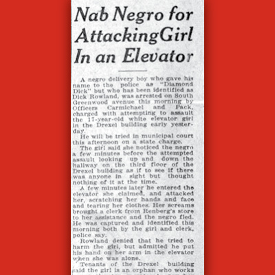

‘No apology’
Richard Lloyd Jones and the 1921 Race Massacre

Richard Lloyd Jones in 1909
Courtesy National Parks Service
This story could begin shortly before midnight on May 31, 1921, when thousands of white invaders streamed into Deep Greenwood, transforming Magic City into a national shame. But by now, you know some version of that story. You probably know the main plot points: a false accusation of rape, a botched attempt at a lynching, and then the full-scale destruction of black Tulsa.
The cone of silence covering the history of 1921 has been lifted. But the role of one of Tulsa’s leading men in sparking the Massacre, and then taking down the Governor of Oklahoma with the support of the Ku Klux Klan? The role of this same man in founding Tulsa’s most famous liberal church and constructing a Frank Lloyd Wright masterpiece?
That story, in all its contradictions, has yet to be told.
To begin the story, we have to travel back to a Madison, Wisconsin, newsroom just before the entry of the United States into World War I. On an unseasonably hot day in 1916, the editor and publisher of the Wisconsin State Journal, Richard Lloyd Jones was dressed in an all-white suit, with a white bowtie and hair perfectly parted down the middle. He readied himself to push out another broadside against the German war machine and its threat to civilization. Jones’s belligerent stance put him squarely in the middle of a debate tearing the Progressive movement apart.
On one side, Jones formed part of a pro-war media alliance urging President Wilson to reverse the U.S. position of neutrality. This put Jones at odds with his own father, the pacificist Unitarian pastor Jenkin Lloyd Jones. Also on the anti-war side of the Progressive movement was Senator Robert “Fightin’ Bob” LaFollette, the Bernie Sanders of his day.
At one point, Jones had been LaFollette’s main booster during the presidential campaign in 1912. The prospect of war, however, drove a wedge in the friendship. When the Senator forged common cause with the Socialist Party over his opposition to U.S. intervention, Jones denounced his old friend in print. From this point on, LaFollette was nothing short of a “pro-German” agent, a Bolshevik, a damn Red. Jones had become so embittered with Fightin’ Bob that the lifelong Republican did the unthinkable in the election of 1916: he endorsed the Democrat, Woodrow Wilson.
The Jones faction lost the battle for Wisconsin, but won the larger war as the Republican Party moved further to the right. By 1919, Jones was looking around for a new challenge, a new crusade for Christian civilization and against the vices of booze, race-mixing, and socialism. During his travels as a celebrity journalist with Collier’s Weekly, he found just the place: Oklahoma.
Another Wisconsinite friend of Jones’s had relocated to Tulsa and, in a few short years, made himself into “Oklahoma’s Rockefeller.” Charles Page bought up Native American lands on the cheap. Page struck paydirt, making millions and turning sleepy Sand Springs into a boomtown. Page also bought himself a newspaper in Tulsa, but wanted to focus on his main mission of making money. He sold the paper in 1919 to Richard Lloyd Jones, who quickly changed its name from The Tulsa Democrat to The Tulsa Tribune.
Jones’s newspaper initially played second fiddle to the more sober-minded Tulsa Daily World, but Jones had a vision. Together with Page, Jones would lead a full-scale attack on the Democratic establishment to remake the entire political and social landscape of the city and the state.
Jones took out a full-page ad in The New York Times to tout Tulsa’s Magic City image in 1920. Without citing any sources, the ad proclaimed Tulsa as “the wealthiest city per capita in the world.” The city had “one big dominating” newspaper: The Tulsa Tribune. Tulsa, Jones told New Yorkers, was the “greatest jobbing, shipping, and banking center of the greatest wealth producing region of the world.”
The ad was mostly hyperbole, but there was an element of truth to the boosterism. Jones’s friend and business partner Charles Page had tapped into an immensely wealthy oil field west of Tulsa. Wrangling an oil lease from the mother of a dead Creek boy, Tommy Atkins, Page suddenly became one of the richest men in Oklahoma as the deed-holder to an oil field that produced one-fifth of the nation’s entire petroleum output in the late 1910s and early 1920s. While The Tribune sang Page’s praises as a philanthropist, The Tulsa World portrayed him as little more than a mafia boss. Page acted as a “self-appointed dictator” with a scheme to dominate the city’s water and power supply.
Richard Lloyd Jones struck back, not only in his defense of Charles Page, but with an ominous note of warning to the mayor and police chief. “The people of Tulsa are becoming awake to conditions that are no longer tolerable,” he said of crime and corruption in the city on May 14, 1921. The Tribune sounded an alarm that if the city was not cleaned up, and cleaned up quickly, “an awakened community conscience will do it for them.” This community conscience was not embodied in the police force, but in vigilante organizations like the American Protective League and the Ku Klux Klan.
What, exactly, was the nature of the intolerable vice and corruption? Who was responsible? Richard Lloyd Jones had been vague on the subject during his first years in Tulsa, but by May, 1921, his newspaper had found the culprit: ideas about racial equality being spread by the likes of the NAACP. The booming neighborhood of Greenwood fostered pernicious ideas about social mobility and equality. On May 15, The Tribune ran a small item on a black man named Gilbert Irge who was arrested for riding a white streetcar in Tulsa. The black man “thought he owned the car,” ran the headline.
A front-page story on May 21 made the case against racial equality more explicitly. An ad-hoc commission made up of a white pastor, a former judge, and a private detective reported on their undercover adventures in Greenwood to The Tulsa Tribune. Liquor was available at every hotel and rooming-house they visited. At hotels, black porters offered to connect the men to prostitutes, some of them white women.
The committee visited a roadhouse where they “found whites and Negroes singing and dancing together.” A subversive new kind of music—jazz—filled the air. A milky, boozy, concoction called Choc beer, invented by Choctaw Indians, flowed freely. “Young white girls were dancing while Negroes played the piano.” The prospect of racial equality was, itself, a threat in a young state that had yoked itself to the Jim Crow laws of the Old South. But throw in the element of white girls enjoying themselves in the company of newly-wealthy black men, abetted by jazz and liquor, and The Tribune had a city’s attention. The situation was intolerable. Or a lot of fun.
The Fire Last Time
All of this brings us to the morning of May 30, when Dick Rowland, a young black man who shined shoes downtown, entered the elevator of the Drexel Building. Rowland needed to use the bathroom, and the Drexel had one of the few “colored” bathrooms in downtown Tulsa on its top floor. When Rowland came back down, the elevator stopped a few inches short of level with ground floor. Sarah Page, a young white woman, operated the elevator, and Rowland grabbed her as he tripped on the way out.
Various theories have been suggested over the years: Page and Rowland were in a lovers’ quarrel, or Rowland put the moves on Page. The Ockham’s razor theory would suggest that it was simply a clumsy move on Rowland’s part. They say that journalism is the first draft of history, and every retelling of this incident reprises the first written account of it in The Tulsa Tribune on May 31, 1921.
With the headline, “Nab Negro for Attacking Girl in an Elevator,” the hysteria over race-mixing acquired a violent tinge. The story followed with this lead: “A negro delivery boy who gave his name to the public as ‘Diamond Dick’ but who has been identified as Dick Rowland, was arrested on South Greenwood avenue this morning by Officers Carmichael and Pack, charged with attempting to assault the 17-year-old white elevator girl in the Drexel building early yesterday.”
The City edition of The Tribune hit the streets Tuesday afternoon around 3:30 p.m. Newsboys hawked papers on street corners, calling out the headline. The mere thought that a black man could “attack”—code for rape—a white girl in downtown set off an almost-immediate clamor for a lynching. The Tulsa of 1921 was a dense, bustling city of around 100,000 people, populated by fortune seekers, many—if not most—transplants from the Old South.
Much has been made of one of these transplants, W. Tate Brady, and his affinity for the Confederacy. Brady, however, was the tip of an iceberg of white supremacy in the Oklahoma establishment. The first order of business in the new State Senate (Senate Bill 1) had been the imposition of rigid segregation based on southern laws. In 1918, the city rolled out the red carpet for a reunion of Confederate veterans and named one of its new schools after Robert E. Lee. Lynchings were commonplace in eastern Oklahoma.
The effect of the “Nab Negro” story, then, was predictable. Forget Twitter: The Tribune had published the most viral story in the short history of Tulsa. Within three hours of publication, a small mob gathered at the Tulsa County Courthouse. Phone calls to the Courthouse informed Sheriff McCollough that plans were being made to lynch Rowland. By 8:00 p.m., the mob numbered close to a thousand people. McCollough ordered his deputies to take up positions to defend against an invasion to seize Rowland.
On the other side of downtown, on the top floors of the Tulsa Tribune building, Managing Editor Victor Barnett begged Richard Lloyd Jones to revise the next edition of the paper, the more widespread State Edition. Other Tribune staffers joined in. Sarah Page had changed her story. Acquaintances of Rowland’s testified to his nonviolent nature. The charge of rape would eventually be dropped. Eyewitnesses recall an even more incendiary editorial in the back of this early edition of The Tribune. Survivors such as Mary Jones Parrish remembered an editorial directly calling for the lynching of Rowland, presumably penned by Jones.
Historians such as Scott Ellsworth have tried to track down the infamous editorial in vain. The Oklahoma Race Riot Commission, a governor-appointed agency to study and make recommendations about the event, was likewise unable to track down the original editorial. University of Tulsa Special Collections librarian Marc Carlson believes its disappearance resulted from poor handling of the actual newspaper. Dates around May 31 are likewise in bad condition. The plate for pressing the newspaper would have had to be broken to completely excise the editorial. But even if there was no Jones editorial calling for a lynching of Rowland, the deliberate cutting of the lead article in the City Edition indicates a cover-up. Likewise, Carlson believes, the verbal coding of a white girl “attacked” by a black shoeshine boy conveyed the message of rape: the pretext for a lynching.
Following the Massacre, however, Jones actually implicated his newspaper in the invasion. He insisted that he would make “no apology” to city officials for urging them to clean up Greenwood. Furthermore, he wrote, the burning of Greenwood should be seen as an opportunity. In the June 4 edition of The Tribune, he wrote the following:
Such a district as the old ‘N—town’ must never be allowed in Tulsa again. It was a cesspool of iniquity and corruption…In this old ‘N—town’ were a lot of bad n—s and a bad n— is the lowest thing that walks on two feet. Give a bad n— his booze and his dope and a gun and he thinks he can shoot up the world. And all these things were to be found in ‘N—town’ – booze, dope, bad n—s and guns.
This editorial came from a man who may have just been the most influential Tulsan of the first half of the twentieth century. He masked his visceral racism for a Northern audience. He wrote in The Detroit Free Press on June 5, 1921, that the result of the “race riot” would be a reborn city where “Negroes will have better homes.” Jones proclaimed that “with that splendid spirit that is characteristic of the aggressively progressive Tulsan, Tulsa lifts its head from its hour of shame to clean house.”
Amy Comstock, Jones’s secretary and mistress, put the issue into a more polite context for a national audience in The Literary Journal. Tulsa’s black residents had gotten ideas about “social equality” from northern propangandists, an ideal “the childlike Negro mind at times indulges in with foolish daydreams.” Now, however, “a new Tulsa was born.”
The Invisible Empire Comes to Town
With Greenwood in ruins, Jones directed his sanctimony at other aspects of civic life. One day in 1922 he had a disagreement with street pavers and set his pen against the slow progress of street paving in the city. The pavers decided to get back at Jones in a way that would nearly ruin him. Knowing that his public image rested on his firm Christian morality, the pavers hired a team of private investigators to spy on suite 500 in the Hotel Tulsa. It was a room that Jones had reserved for his own private business, namely that of dalliances with his longtime secretary, Comstock. Investigators rigged up a microphone and a camera to surveil the couple. Photos revealed Jones’s head under Comstock’s lifted skirt. A nemesis of Jones’s, an attorney named John Woodward, published an entire account of the affair in all its obscene glory. Tulsans snapped it up.
If Jones was humbled by the exposé, he did not let it show in the pages of The Tribune, which became even more open in its support of the Klan. What had been a Tulsa-based conflict erupted into a statewide war between Klan supporters and Gov. Jack Walton. During the election of 1922, The Tulsa World endorsed Walton, the closest thing to a socialist governor Oklahoma has ever had. After an earlier dalliance with the Klan, Walton became convinced that the organization was a menace to the nation, declaring them “an invisible empire.” As soon as he came into office in January, 1923, Walton went after the Klan with every tool at his disposal. He shut down a Klan parade in Tulsa. He ordered state troopers to arrest anyone in a white hood and told them he would immediately pardon state officials who shot Klansmen.
Richard Lloyd Jones howled in disapproval against Walton’s censorship of The Tulsa Tribune, which the governor considered a mouthpiece of the KKK. Jones filed suit in a federal court against Walton and counted on Klan support in a nasty dispute with the governor that led to a physical confrontation between Klansmen and a Walton supporter in a downtown hotel. National media outlets talked of a “civil war” between the Klan and Gov. Walton.
The Tribune stopped short of a wholesale endorsement of the Klan, and occasionally offered mild rebukes to vigilantism, but there is much evidence to suggest complicity with the KKK. In September 1922, Richard Lloyd Jones, along with high-ranking officers in the Klan, was named in a lawsuit relating to damages from the tarring and feathering of a young Jewish man, who the Klan claimed was a narcotics dealer. At the time, the Klan had a posse of men with blacksnake whips who kidnapped and tortured people like the Greenwood publisher A. J. Smitherman, whose ear was cut off by his abductors. All of this was done in the name of protecting American values and Christian virtue. When cases surfaced of Klansmen torturing and murdering white Americans nationwide, however, public opinion turned against them. By the end of the 1920s, America—along with Richard Lloyd Jones—was ready to move on, to bury this violent period in history.
Jones was Tulsa’s celebrity journalist, a man whose connections with the national Republican Party ran deep. He had served on a presidential commission on prison reform and served as a delegate to the national convention. His post-Massacre effort to paint the tragedy as an insurrection by lawless African Americans seems to have been effective. No one was ever found guilty of a single crime against black Tulsans. Within a year, the Tribune effectively erased the incident from Tulsa’s identity.
On June 1, 1936, The Tribune ran a column on the noteworthy events of that day fifteen years before. Miss Carolyn Skelly had been a “charming young hostess.” Central High School held its prom. Miss Vera Gwynne prepared to leave for the University of Chicago to study kindergarten education. Nary a mention of an attack, an invasion, or a burning. Ten years later, on the twenty-fifth anniversary, The Tribune ran a similar column about the events of 1921, also neglecting to mention anything about the violence.
All Tulsa’s Souls
By the time of Jones’s death in 1963, white Tulsa had seemingly erased all memories of the Massacre. His enmity with The Tulsa World ended and the two papers wound up publishing under the same roof, with similar politics and journalistic styles. The Tulsa World, to this day, continues to hedge when it comes to the local media’s responsibility in cultivating the conditions for the Massacre. (It uses both “riot” and “massacre.”) The Norman Transcript wrote that Richard Lloyd Jones “was a rare combination of liberal and conservative; liberal in advocating human rights and protecting the weak; conservative in his attitude toward government bureaucracy and curtailment of individual rights and freedoms.”
Jones’s childhood friend and cousin, the architect Frank Lloyd Wright, held a different view. To him, Jones was “a Puritan and a publican of the worst stripe. The hypocrisy necessary to be these things is bred to the bone, dyed in the wool.” The Lloyd-Jones connection, however, was profoundly meaningful to Frank Lloyd Wright. Both cousins were proud of their blood ties to the Welsh founder of the first All Souls church in Chicago, Jenkin Lloyd Jones.
Seven years after the Massacre, Richard Lloyd Jones contracted with Frank Lloyd Wright to build the 8,000-square-foot masterpiece, Westhope, which still stands at 37th and Birmingham Ave. By the late 1920s, Jones was immensely wealthy. He spent half a million on Westhope (about $7.3 million in today’s dollars) but still found the house unsatisfactory. The glass cubes made it too cold in the winter, too hot in the summer. When it rained, it leaked right on Jones’s writing desk. “Move your desk,” Wright responded in a letter.
The irascible Jones, at the height of his powers, also co-founded All Souls Liberal Church—the “liberal” moniker was later dropped—and oversaw its tremendous growth to become, for a time, the largest Unitarian congregation in the world. The contradictions of all of this are difficult to wrap one’s head around: The same fear-mongering racist media tycoon was also a major supporter of the most liberal church in Tulsa, a church now known for its anti-war, pro-LGBTQ, pro-social justice activism.
For the head pastor of All Souls, Marlin Lavanhar, the connection to Richard Lloyd Jones is a teachable moment about Tulsa’s racist past. After all, many newcomers to All Souls are also newcomers to Tulsa who know nothing about 1921. It might have been easy to put Jones’s skeleton in the closet, but Lavanhar has done the opposite. He takes new members to sites connected to the Massacre: the Jones family house, the Tribune building, and the Greenwood district. Then, Lavanhar says, “We talk about what happened and how we are connected to these events, and how it shapes our understanding and commitment to racial justice and healing.”
By the centennial of the Tulsa Race Massacre, Richard Lloyd Jones’s church is planned to be relocated at ground zero of the tragedy, across the street from the courthouse where Dick Rowland was held and where the first shots were fired. Lavanhar says the new sanctuary will face north, only three blocks from Greenwood Ave. “We are literally facing our history with a sense of mission for healing,” Lavanhar wrote in an email. “We see this new location and the new design and the fact that it is being built, funded and designed and worshiped in by black and white Tulsans together as part of our story and Tulsa’s story of reconciliation.”
Not everyone shares Lavanhar’s views on Richard Lloyd Jones. His grandson, Jenkin Lloyd Jones Jr., has continued to defend a “family history that is counter to any racism.” In an interview with Voices of Oklahoma in 2011, Jones said he had not seen the article that sparked the Massacre until shortly before the interview was recorded.
Ninety years after the Massacre, Jones defended the article. “If that’s an inflammatory headline, I don’t know journalism,” he told longtime radio journalist John Erling. “It was very much the style of the day in newspapers everywhere. You wanted a strong, active verb early on and the term ‘negro’ is what blacks were known as in those days.”
Jones maintained that his grandfather hid blacks in his basement during the Massacre, and had once hosted Booker T. Washington in his house during his Wisconsin days. Jones’s son, Richard Lloyd Jones, Jr. continued his father’s business as the publisher of the Tribune and an advocate for Tulsa aviation. Tulsa’s westside airport—the busiest airport in Oklahoma—is named after him.
As for The Tulsa Tribune itself, it ceased publication in 1992, the end of an era in which newspapers served as a catch-all media hub, now replaced by Twitter feeds, cable news, clickbait, and gossip magazines. The Tribune’s tradition of spinning fake news stories to inflame the prejudices and passions of its readers, however, is very much still a part of our lives.
.jpg)
.jpg)